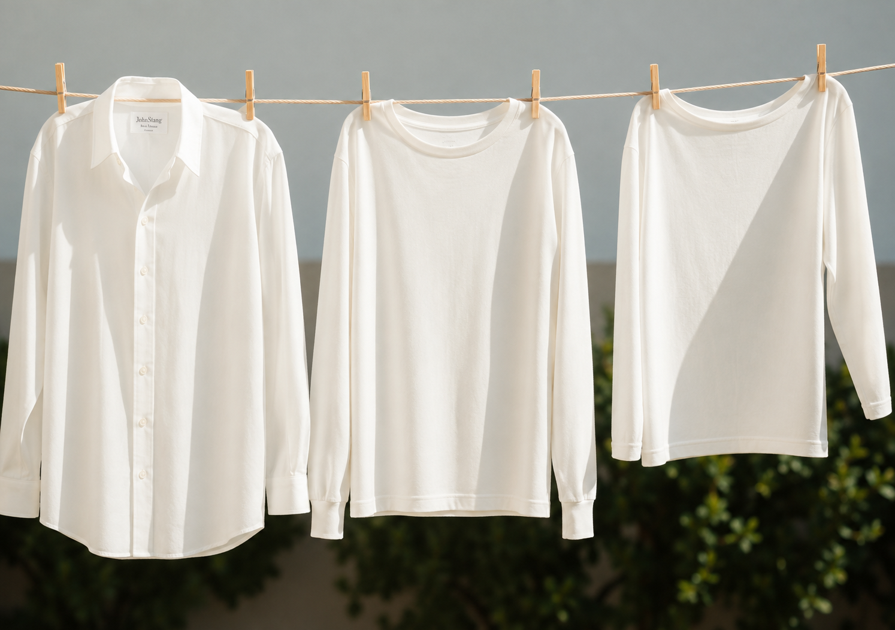
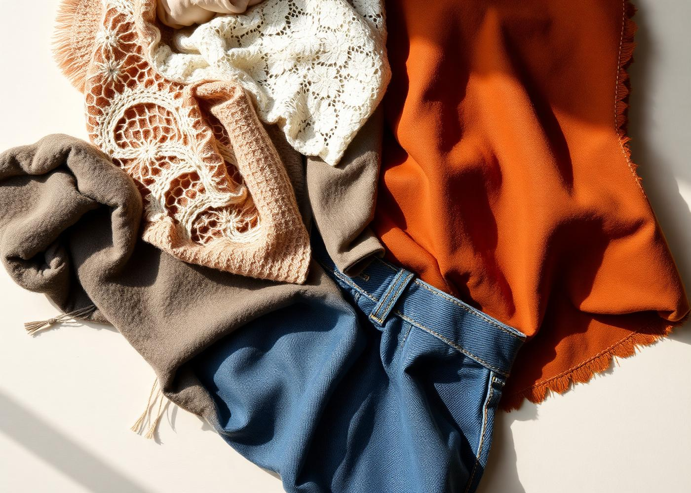
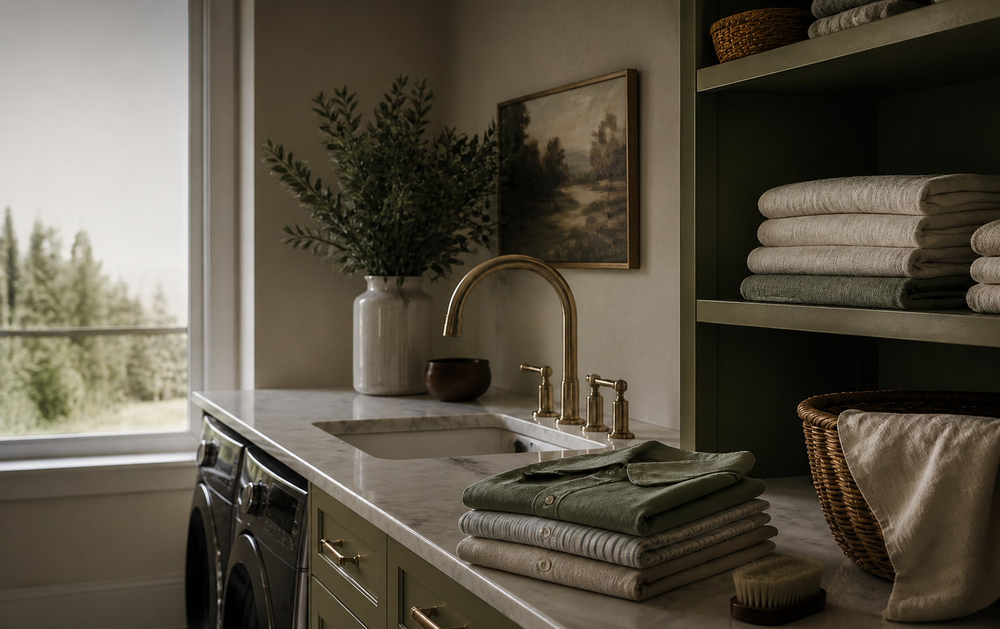
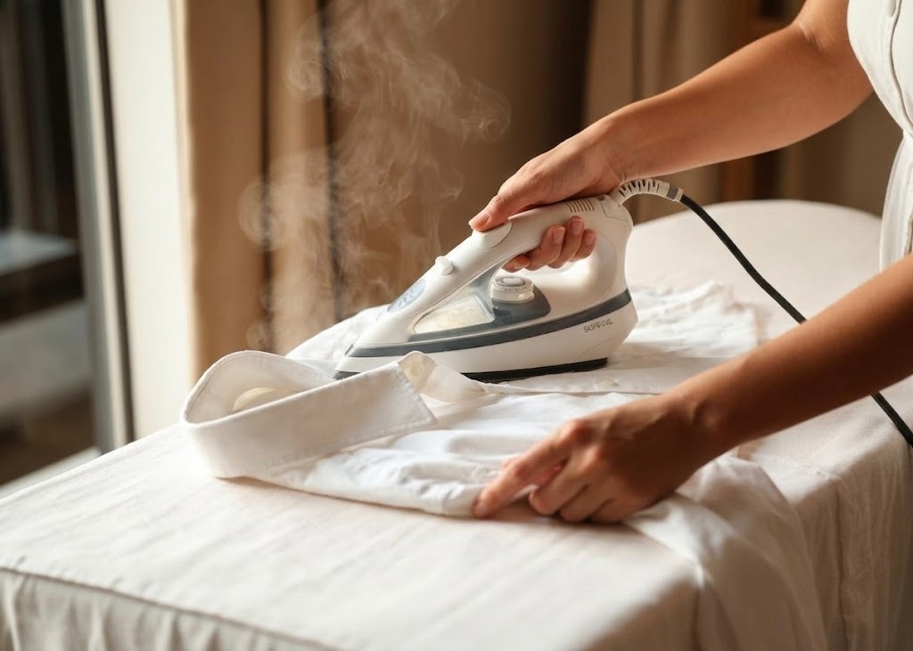

Habilidades Domésticas
Um guia para as técnicas de lavanderia, dos símbolos da etiqueta ao vinco perfeito do uniforme de gala.
Abertura
Lavar roupa parece rotina, mas é técnica. Cada fibra reage de um jeito à água, ao calor, ao atrito e aos produtos químicos. Quem entende o que está escrito na etiqueta, sabe separar as peças, ataca a mancha na hora certa e passa com a temperatura correta economiza dinheiro, preserva a cor e mantém o guarda‑roupa com cara de vitrine. Esta especialidade — criada em 1928 pela Associação Geral — ensina exatamente isso: o cuidado com a roupa como um serviço de excelência.
“A etiqueta é o manual de instruções da peça. Ignorá‑la é a causa nº 1 de roupa encolhida, desbotada ou deformada.”

Alfabeto do cuidado
Cinco famílias de símbolos organizam tudo: a tina (lavagem), o triângulo (alvejante), o quadrado (secagem), o ferro (passar) e o círculo (limpeza profissional a seco). Pontos indicam temperatura, barras indicam suavidade e o X sempre significa proibido.
O sistema de símbolos nasceu na Europa nos anos 1950 e foi padronizado pela norma ISO 3758 — hoje o “esperanto” das lavanderias: funciona em qualquer idioma. Regra de ouro para decorar: X = proibido, ponto = temperatura, barra sob o símbolo = ciclo mais suave (duas barras = ciclo delicadíssimo).
Pré‑lavagem
Metade do resultado é decidido antes de a máquina ligar.
Bolsos, punhos e barras: papel, caneta, moeda e batom destroem uma máquina inteira de roupa.
Feche zíperes e colchetes (rasgam outras peças), abra botões e vire do avesso peças escuras, estampadas e jeans.
Pré‑trate qualquer mancha visível antes de a peça entrar na água.
Brancos · claros/pastéis · coloridos · escuros e pretos. Peça nova e vermelha lava sozinha nas primeiras vezes.
Delicados longe de jeans e toalhas (atrito e fiapos). Roupa muito suja não vai junto com roupa levemente usada.
Meias, sutiãs e rendas em saquinho de rede. Não encha a máquina: a roupa precisa girar para lavar.

Solidez da cor
Roupa suja e, principalmente, úmida num cesto fechado vira um laboratório biológico em poucas horas:
Toalha ou roupa molhada: estender para secar antes de ir ao cesto. Cesto sempre arejado, nunca de plástico vedado.

Química de bancada
Todos são úteis; todos são perigosos se usados sem critério. Ventilação, luvas e teste em área escondida são inegociáveis.
| Substância | Para que serve | Cuidados principais |
|---|---|---|
| Cloro (água sanitária) | Branquear algodão branco, desinfetar | Só em brancos de algodão/linho; sempre diluído (1 colher/litro) e nunca puro sobre o tecido. Amarela e fura tecido com o tempo; destrói lã, seda e elastano. Jamais misturar com amoníaco ou ácidos — libera gás tóxico. Luvas e ambiente ventilado. |
| Peróxido de hidrogênio | Alvejante sem cloro, coloridos e sangue | Use volume baixo (10 vol / 3%). Mais suave, mas ainda clareia: teste antes. Guarde em frasco escuro e fechado — luz o decompõe. Pode irritar pele e olhos. |
| Amônia (amoníaco) | Gordura, suor, manchas de tinta | Vapor extremamente irritante: use com janelas abertas e nunca inale. Sempre diluída. Nunca com cloro (forma cloraminas tóxicas). Ataca lã e seda (fibras proteicas). |
| Tíner | Tinta a óleo, esmalte, verniz | Altamente inflamável e tóxico: longe de chamas, cigarro e faíscas. Só do avesso, com pano branco por baixo, em pequena quantidade. Dissolve acetato, elastano e sintéticos. Enxaguar muito bem antes de lavar. |
| Aguarrás | Tinta a óleo, graxa, piche | Também inflamável e de odor forte; deixa halo oleoso — sempre aplicar do centro para fora e lavar em seguida com detergente. Não usar em sintéticos delicados. Nunca secar a peça na secadora com resíduo de solvente. |
| Vinagre branco | Amaciar, fixar cor, tirar odor e resíduo de sabão | O mais seguro, mas é ácido: dilua e não deixe horas de molho. Nunca junto com cloro (libera gás cloro). Não usar em pedras/pérolas naturais nem em superfícies de mármore. |
Emergências
Regra universal: aja rápido, use água fria primeiro (o calor cozinha a mancha), dê tapinhas em vez de esfregar e trabalhe de fora para dentro, pelo avesso, com um pano branco absorvente por baixo.
Caneta/esferográfica: embeba com álcool isopropílico ou álcool 70 e dê tapinhas até transferir para o pano. Tinta a óleo: aguarrás/tíner do avesso. Tinta látex ainda úmida: água fria e detergente.
Estique o tecido sobre uma bacia e despeje água quente de certa altura (só em algodão). Depois, vinagre branco ou limão + sol. Nunca use sabão antes: fixa a mancha.
Cubra com suco de limão e sal, deixe ao sol 30 min e enxágue. Nada de cloro — reage com o ferro e escurece a mancha para sempre.
A clorofila é pigmento: álcool 70, ou pasta de vinagre + bicarbonato por 15 min, depois detergente e escova macia. Nunca água quente antes.
Raspe o excesso, enxágue pelo avesso com água fria, esfregue detergente neutro. Resíduo de gordura: um pouco de peróxido em tecido branco.
Cubra com amido/talco/maisena por 20 min para puxar o óleo, escove e aplique detergente de louça puro sobre a mancha antes de lavar em água morna.
Deixe de molho em água fria com sal; se persistir, água oxigenada 10 vol (borbulha e clareia) ou pasta de bicarbonato. Água quente coagula a proteína e fixa de vez.
Cubra com gelo ou leve ao congelador em saco plástico; endurecido, quebre e retire com uma faca sem corte. Resto: álcool ou vinagre morno.
Por que remover a mancha antes de lavar? Porque o sabão, o atrito e — sobretudo — o calor da água e da secadora fixam a sujeira quimicamente na fibra. Uma mancha que passou pela secadora quase sempre é permanente.
Alta costura em casa
À mão, água fria/morna (máx. 30 °C) com sabão neutro ou específico para lã. Nada de esfregar, torcer ou deixar de molho longo — apertar de leve. Enxágue na mesma temperatura, enrole numa toalha para tirar a água e seque na horizontal, longe do sol e do aquecedor. Choque térmico + atrito = feltragem irreversível.
Nunca na máquina. Limpe com pano macio levemente úmido e sabão de coco/glicerina bem diluído, sempre no sentido da peça; seque com pano seco à sombra. Hidrate com creme próprio para couro a cada poucos meses. Couro sintético aceita pano úmido com detergente neutro. Guarde em cabide largo e capa de tecido (nunca plástico).
Limpeza a seco com escova de cerdas macias ou específica de camurça, sempre no mesmo sentido do pelo. Manchas: borracha branca, pedra‑pomes leve ou pano com vinagre branco/álcool, deixando secar naturalmente. Nunca molhar, nunca sabão em pó, nunca sol ou secador. Impermeabilizante em spray é o melhor aliado.
À mão, em bacia com água fria e sabão neutro (ou xampu suave). Só apertar suavemente por alguns minutos; nada de torcer nem escovar. Se for à máquina, saquinho de rede e ciclo delicado. Seque na horizontal sobre toalha, esticando o desenho. Passe pelo avesso, ferro morno, com um pano branco sobre a peça.
Investimento da casa

| Ferro comum (a seco) | Ferro a vapor | |
|---|---|---|
| Vantagens | Mais barato e simples; leve; não exige água nem manutenção; ótimo em tecidos que não podem receber umidade (seda, alguns sintéticos); sem risco de gotejar e manchar. | Desamassa muito mais rápido e com menos força; vinco profissional; permite passar peças penduradas e no vertical (cortinas, blazers); ajuda a higienizar e a soltar odores; menos risco de queimar porque o vapor protege a fibra. |
| Desvantagens | Exige borrifador e mais passadas; risco maior de brilho ou queimadura no tecido; ruim com linho e algodão grosso muito amassados. | Mais caro e pesado; precisa de água (de preferência filtrada/destilada) e limpeza periódica para não acumular calcário; pode pingar e manchar se mal usado; consome mais energia. |
Acabamento
O padrão de vitrine mora aqui: dobra sempre no mesmo tamanho, pilhas por categoria, cabide para o que amassa.
Passe dobrado ao meio, ferro quente com vapor (algodão). Dobre em quatro alinhando cantos com cantos; lençol de elástico: encaixe os quatro cantos um dentro do outro e esquadre. Guarde cada jogo dentro da própria fronha — vira um kit e a prateleira fica perfeita.
Lave e passe do avesso, temperatura alta, atenção a bolsos e cós. Dobre pernas uma sobre a outra, alinhando as costuras internas, depois dobre em dois ou três. Guarde em pé, lado a lado na gaveta (dobra visível para cima) ou empilhada até 4 peças.
Alinhe as costuras laterais para o vinco cair exatamente no meio da perna; passe do avesso ou com pano úmido para não brilhar. Reforce o vinco frontal. Guarde pendurada pela barra em cabide de clipes ou dobrada uma vez sobre a barra do cabide.
Passe sobre a ponta estreita da tábua, girando a peça; plissados: prenda as pregas com clipes e passe prega a prega, pelo avesso, com pano. Guardar pendurada em cabide com clipes evita marcas de dobra.
Ordem: gola (do avesso para fora) → punhos abertos → mangas → costas com o canhão → frentes, contornando os botões. Feche o primeiro e o terceiro botão, deite de bruços, dobre as laterais para dentro com as mangas retas e dobre ao meio. Preferência: cabide, com espaço entre as peças.
Passe estampa do avesso. Dobre laterais para o centro com as mangas para trás e depois em dois ou três. Método vertical (arquivo): guarde em pé na gaveta, todas visíveis de uma vez.
Lave separadamente, do avesso e em água fria, sem alvejante — insígnias e faixa não vão à máquina. Passe a camisa/blusa como camisa social, com vincos retos nas mangas, e a calça/saia com o vinco central perfeito. Cuidado redobrado ao redor de bordados e distintivos: passe por cima de um pano, sem pressionar demais. Lenço e tira: ferro morno. Guarde sempre pendurado em cabide firme, com capa de tecido, longe de umidade — nunca dobrado no fundo da gaveta. Sapatos engraxados e insígnias conferidas fazem parte do conjunto.
Mão na massa
A parte teórica prepara; a prática é o que forma o hábito. Sugestão: monte um diário simples com data, peça, método e observação.
Lavar, dobrar e guardar as roupas da família por um mês (com máquina) ou por uma semana (à mão).
Lavar corretamente no tanque, bacia ou rio pelo menos duas peças — peças íntimas não contam. Ensaboar, esfregar sem violência, enxaguar até a água sair limpa.
Passar, dobrar e guardar as próprias roupas durante, no mínimo, duas semanas seguidas.
Manter armário ou cômoda organizados por um mês e apresentar relatório com facilidades e dificuldades do processo.
Extra
Tábuas de argila da Babilônia (2800 a.C.) já traziam receita de sabão com gordura e cinzas. Os romanos usavam urina fermentada — rica em amônia — para branquear togas nas fullonicae, as lavanderias de Pompeia.
A molécula do sabão tem uma ponta que ama água e outra que ama gordura. Ela envolve a sujeira em micelas e a água leva tudo embora. Por isso enxaguar bem é tão importante quanto ensaboar.
Duas bolinhas limpas (ou de lã) deixam edredons e casacos mais fofos e reduzem o tempo de secagem — e o consumo de energia.
Excesso de detergente deixa resíduo, endurece o tecido, causa alergia e alimenta o mofo da máquina. Meça sempre.
Cerca de 80–90% da energia de uma lavagem vai para aquecer a água. Lavar a frio preserva a cor e corta a conta de luz.
Uma vez por mês: ciclo vazio com água quente e vinagre ou bicarbonato, limpeza da borracha da porta, do filtro e da gaveta de sabão. Máquina suja deixa a roupa com cheiro.